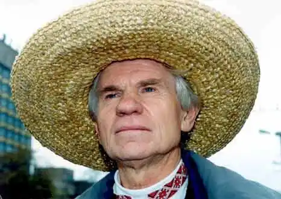
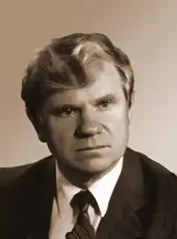
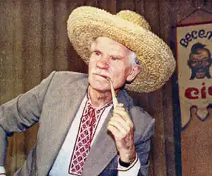
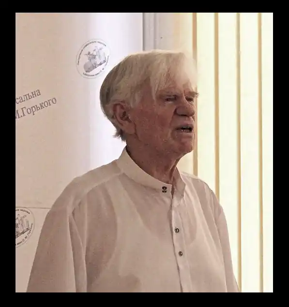
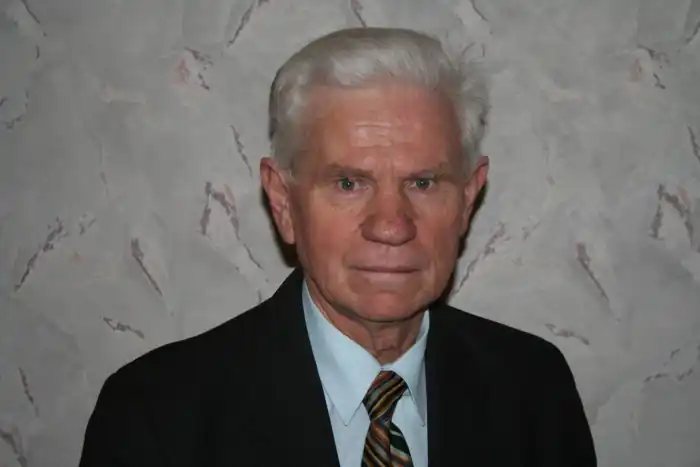

Ребро Петро
Петро Павлович Ребро народився 19 травня 1932 року в селі Білоцерківці, Куйбишевського району, Запорізької області, в родині колгоспника. Закінчив Запорізький педінститут (1953). Вчителював. Працював у редакціях обласних газет "Червоне Запоріжжя", "Запорізька правда", в обласному книжково-газетному видавництві. З 1967 року — відповідальний секретар Запорізької організації Спілки письменників України. Нагороджений орденом Трудового Червоного Прапора, медалями, Почесними грамотами Президій Верховних Рад Киргизької РСР, Абхазької і Калмицької АРСР.
Поет. Автор збірок ліричних і сатиричних поезій "Заспів" (1955), "Вітер з Дніпра" (1957), "Проти шерсті" (1958), "Родичі сонця" (1961), "Проміння серця" (1962), "Перо під ребро" (1963), "Гірке причастя" (1964), "Людяність" (1965), "Запорізька веселка", "Заячі вуса" (1967), "Вогнярі" (1971), "Порохівниця" (1972), "Могорич" (1974), "Криця" (1975), "Листи до земляків" (1976), "Гаряча прокатка", "Побратимство" (1979); драматичної поеми "Заграва над Хортицею" (1980); книжок нарисів і віршів "У сусідів по планеті" (1960), документальних повістей "Грім над Запоріжжям", "Ніжна сталь" (1969); літературознавчого дослідження "Над синім Дніпром — Буревісник" (О. М. Горький на Запоріжжі, 1973); книжок для дітей "Сонечко", "Чому заєць косоокий" (1958), "Найсмачніші огірки" (1959), "Солов'ята" (1961), "Мій тато — сталевар", "Дірочка від бублика" (1962) тa ін. В перекладі на російську мову вийшли збірки поезій "Жди солдата" (1972), "Таблетки с перцем" (1966), "Воробьишки" (1962) та ін. Працює також у жанрі поетичного перекладу.